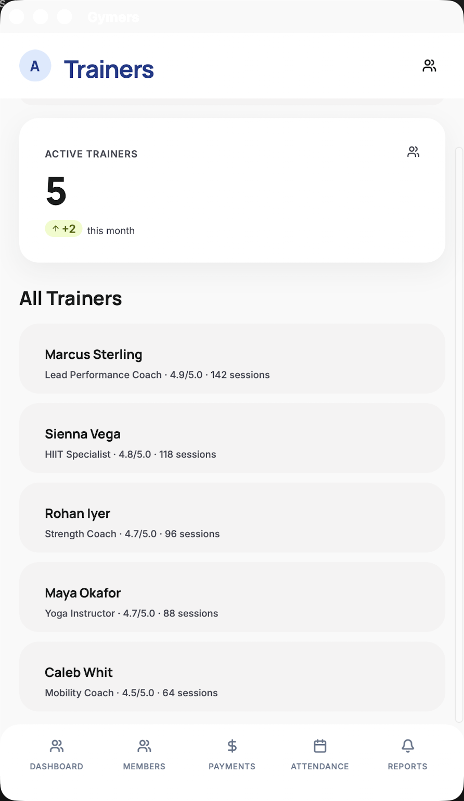
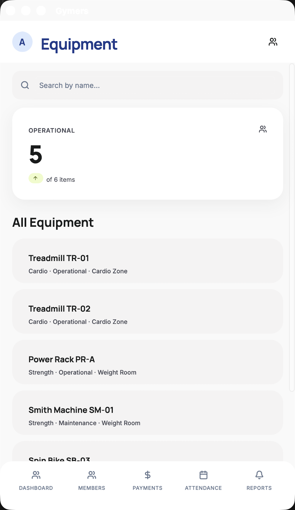
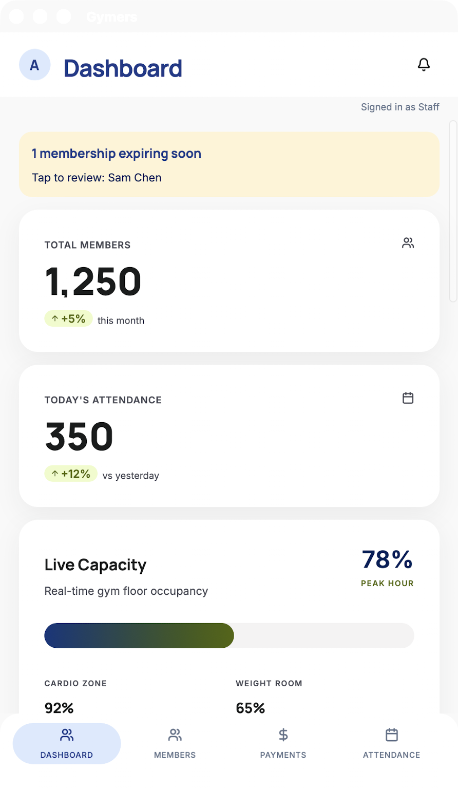

Overall Status: The Gymers project is a working .NET MAUI iOS app with a Mac Catalyst secondary target for fast local verification. Six core tab screens (Login, Dashboard, Members, Payments, Attendance, Reports) plus three route-only screens (Trainers, Workouts, Equipment) are implemented and persist their state in a SQLite-backed DataStore. Tapping any row in Recent Payments generates a one-page PDF receipt via UIKit's native PDF renderer; the Reports tab generates Revenue, Attendance, and Member Roster reports as multi-page PDF or CSV via the system share sheet. Role-based access control persists the Admin/Staff role from login through navigation, reflowing the bottom tab bar and hiding admin-only Dashboard analytics for Staff. Attendance offers a simulated QR/ID scan check-in alongside name search, and the Dashboard surfaces expiring-membership alerts. The build succeeds with 0 warnings and 0 errors on both iOS and Mac Catalyst. Every README scope item is now implemented; remaining work is broader test coverage and visual polish.
| Feature |
Status |
Description |
| Project setup |
Completed |
.NET MAUI app targeting net10.0-ios, with net10.0-maccatalyst added on 2026-05-09 as a secondary target for fast local verification. Build succeeds with 0 warnings and 0 errors on both targets. |
| Login screen |
Completed |
Validates fixed admin/staff credentials per the selected role pill (admin/admin123, staff/staff123). An inline error label surfaces empty-field and bad-credential states; correct credentials route to the Dashboard. |
| Admin dashboard |
Completed |
KPI cards for Total Members, Today's Attendance, and Monthly Earnings (sample figures) plus a Live Capacity card with zone breakdown, a Coach Spotlight card, and a Today's Classes list rendered from sample class sessions. |
| Member management |
Completed |
Live name-search filter over the in-memory member list with a muted empty-state notice when no matches are found. Search results re-render imperatively as the user types. |
| Payment processing |
Completed |
Form validates Member name (must match an existing member), Amount (positive number with up to 2 decimals), and Method (Card / Cash / Bank, case-insensitive). Recorded payments insert into the store and appear at the top of Recent Payments. A status label flips between error (red) and success (green) states. |
| Attendance monitoring |
Completed |
Search field surfaces up to 3 member suggestions, or auto-selects on an exact name match. CHECK IN inserts a check-in into the store; the Recent Check-ins list updates with the new row at the top. An empty store renders a muted fallback notice. |
| In-memory data layer |
Completed |
DataStore singleton exposes ObservableCollection of Members, Payments, and CheckIns, seeded from SampleData. Pages subscribe to CollectionChanged and re-render. Registered as a DI singleton; pages are transient. |
| SQLite persistence |
Completed |
DataStore is now SQLite-backed via sqlite-net-pcl. Members, payments, and check-ins persist across app restart in gymers.db3 under FileSystem.AppDataDirectory. Bootstrap seeds from SampleData on first run; runtime mutations write through SQLiteAsyncConnection. |
| Receipt PDF generation |
Completed |
Tapping any row in Recent Payments renders a one-page PDF receipt via UIKit's UIGraphicsPdfRenderer (built into iOS and Mac Catalyst SDKs, no third-party packages), saves under FileSystem.CacheDirectory/receipts/, and opens the system share sheet for save / email / AirDrop / print. Re-issues are deterministic from SQLite, so any historical payment can be re-printed; deleted-member receipts gracefully fall back to a placeholder. |
| Reports + export |
Completed |
A Reports tab generates Revenue, Attendance, and Member Roster reports for a chosen period (Week / Month / All). Each report can be shared as a multi-page PDF (UIKit's UIGraphicsPdfRenderer) or a CSV (plain UTF-8, RFC 4180-style quoting with LF line endings), via the system share sheet — save to Files, email, AirDrop, or open in Numbers. |
| Trainer roster |
Completed |
A SQLite-backed Trainers screen lists all trainers with a live name-search filter; rows render as ListRows with initials avatars and "Title · Rating · Sessions" subtitles. The Dashboard's Coach Spotlight now reads from the trainers table (top by rating, with sessions as a tiebreaker), and its VIEW PERFORMANCE PROFILE button navigates to the Trainers screen via //Trainers. |
| Workout plans |
Completed |
A SQLite-backed Workout Plans screen lists curated plans with a live name-search filter; each row shows the assigned trainer, level, weekly cadence, and total duration. The Dashboard's new Featured Workout Plan card highlights the top-ranked plan (Foundations of Strength, led by Marcus Sterling) and its BROWSE WORKOUT PLANS button navigates to the Workouts screen via //Workouts. Plans are FK'd to trainers, with the trainer name resolved at render time. |
| Equipment management |
Completed |
A SQLite-backed Equipment screen lists the gym's equipment roster with a live name-search filter and an Operational KPI card; each row shows category, status, and floor location. The Dashboard's new Equipment Status card surfaces operational-vs-maintenance counts (5 of 6 operational with one item under maintenance in the seed) and its VIEW EQUIPMENT button navigates to the Equipment screen via //Equipment. |
| Role-based access control |
Completed |
Login now persists the selected role through a Session singleton (Services/Session.cs), exposed both via a static Current accessor and as a DI singleton. The bottom tab bar reflows from five tabs (Admin) to four (Staff) by hiding Reports and rebuilding the grid's column definitions at construction time. The Dashboard suppresses the Monthly Earnings KPI for Staff and displays a "Signed in as Admin" / "Signed in as Staff" badge under the top app bar. Payments remains visible to Staff per the README's scope (walk-in payments, renewals, receipts). |
| Member ID scan check-in |
Completed |
Attendance now exposes a SCAN MEMBER ID primary path alongside the existing name search. Tapping it opens a fullscreen viewfinder overlay (240px bordered box, "SCANNING..." state); a 1.2-second timer resolves to the next member who hasn't yet checked in today (wrapping to the first member if all are already in) and reveals a detected-member card with name, tier, and ID. CONFIRM CHECK-IN flows through the existing RecordCheckInAsync so the new CheckIn appears at the top of Recent Check-ins; CANCEL dismisses without recording. Simulates the README's "QR code or ID scanning" attendance path on hardware where a real camera pipeline is out of scope. |
| Membership expiry alerts |
Completed |
The Dashboard now prepends a tappable yellow alert banner listing members whose Status is "Expiring Soon" (Sam Chen in the seed). The banner shows the count and the comma-joined member names; tap navigates to the Members screen for follow-up. It stays hidden when no memberships are expiring, surfacing only when action is required. Visible to both Admin and Staff per the README's Membership Status Viewing scope. |

Trainers screen showing the search field, Active Trainers KPI card, and the All Trainers list with five rows (Marcus Sterling, Sienna Vega, Rohan Iyer, Maya Okafor, Caleb Whit).

Workout Plans screen showing the search field, Active Plans KPI card, and the All Plans list (Foundations of Strength, HIIT Conditioning Cycle, Power Build 8-Week, Mindful Mobility Series, Active Recovery Block) with trainer-name and cadence subtitles.

Equipment screen showing the search field, Operational KPI card (5 of 6 items), and the All Equipment list with six rows (Treadmill TR-01, Treadmill TR-02, Power Rack PR-A, Smith Machine SM-01 marked Maintenance, Spin Bike SB-03, Yoga Mat Set YM-01).

Dashboard signed in as Staff: 4-pill bottom tab bar with Reports hidden, "Signed in as Staff" badge under the top app bar, no Monthly Earnings KPI, and the yellow expiring-soon banner visible at the top of the scroll.
Note: This document is prepared as a progress update for evaluation. Drop the referenced PNGs into the placeholder areas of the .docx before final submission if the evaluator requires images embedded directly in the Word file.